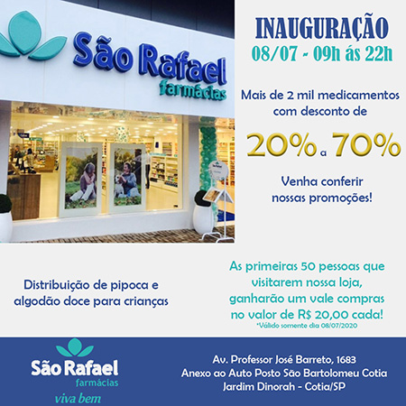
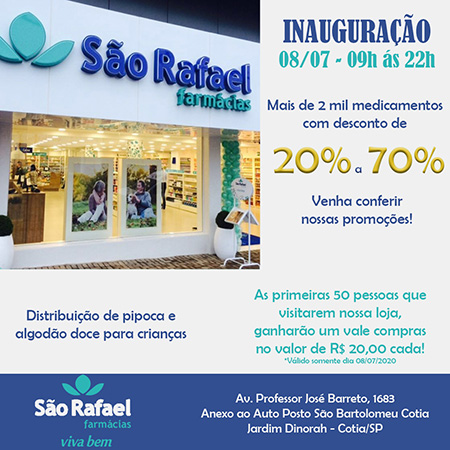
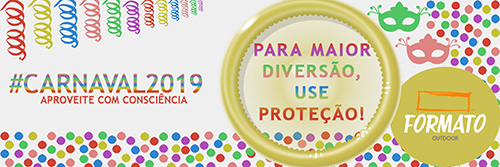
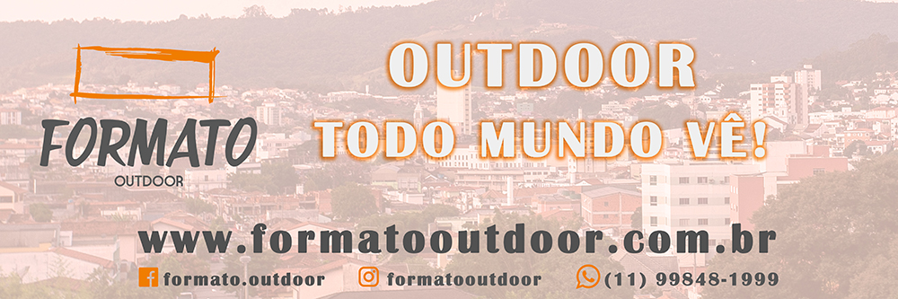
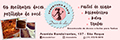
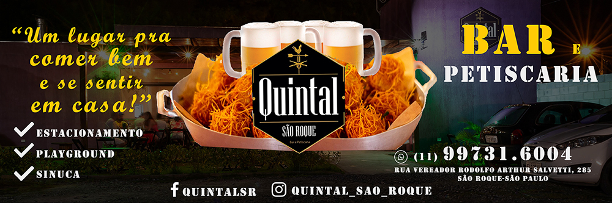
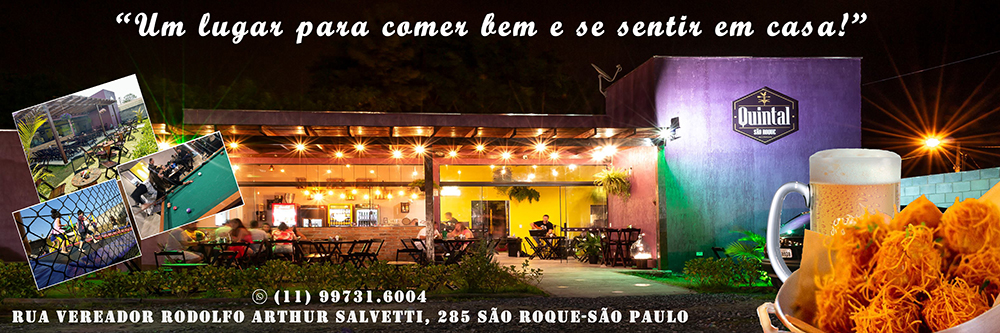

Portfólio de Artes
Os tamanhos e resoluções das artes foram otimizados para melhor visualização e carregamento.
Artes desenvolvidas para posts de Redes Sociais:

 

Artes desenvolvidas para stories para Redes Sociais:
Artes desenvolvidas para outdoor:




